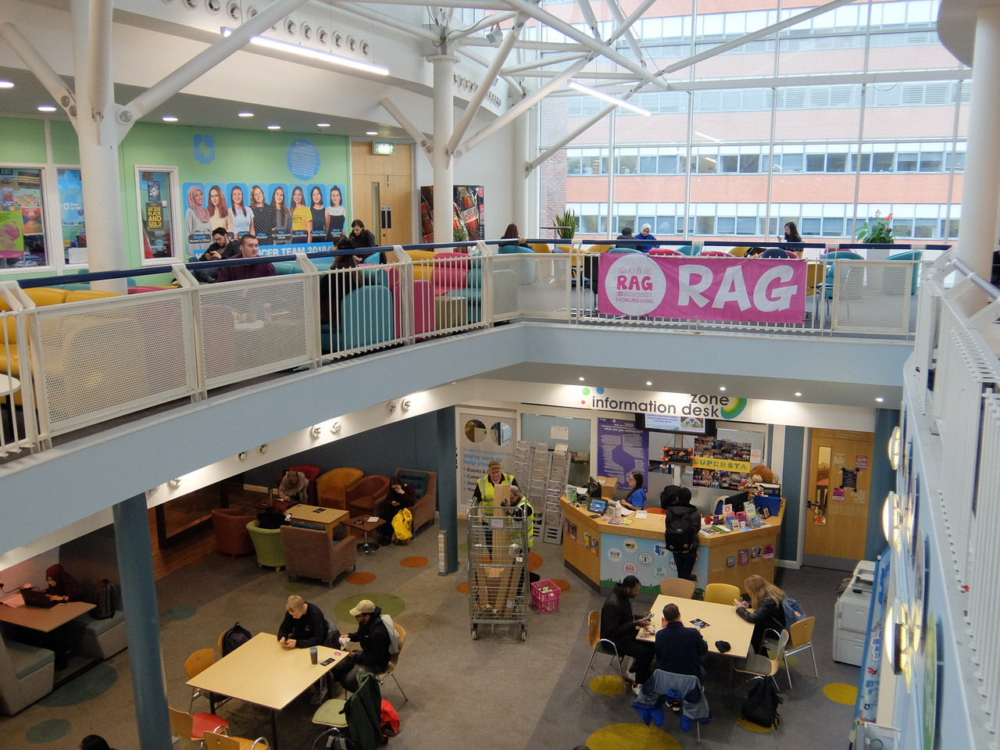

Politics
Students' Union Officers
The Students' Union officers are 8 elected representatives who work for the Students' Union full-time, trying to make sure the Students' Union offers what the students want and keep it relevent to them. They tackle students' issues and take action in the form of changes around the SU or even national campaigns.
SU President - Lilian Jones
Lilian oversees the other officers on this list to make sure they always have the students' best interests at heart and will not make any decisions that will have negative impacts on some of the students. She also chairs a number of committees around the University and generally works to make sure everything is good for everyone.
SU Development Officer - Mel Kee
Mel is responsible for the services within the University and makes sure they are providing everything that is relevant to the students. She chairs the SU Finance committee and sits in on everything related to budgeting and finance.
Education Officer - Anna Crump Raiswell
Anna works closely with the academic representatives to make sure that academic issues are all being addressed. She is responsible for the academic welfare of all the students including both undergraduate and postgraduate.
Welfare Officer - Katharine Swindells
Katharine helps to provide support to the students with regard to health, finance and housing, for example. She spends a lot of time working with the Student Advice Centre to make sure that the advice being given stays relevant and up to date.
Activities Officer - Cecilia Hudson-Molinaro
Cecilia makes sure that people want to join societies and that students are engaged in sports and volunteering projects. She also ensures that students who contribute through any of these get the recognition they deserve.
Womens Officer - Mayeda Tayyab
Mayeda represents the view of all the female students within both the university and at a national level. She works with the Women's Committee to help lead campaigns and makes sure that women's voices are heard at this university.
Sports Officer - Sarah Morse
Sarah works closely with the Sport Sheffield Committee and all sports staff to ensure students are taking part in sport at any level. She works to make sure that more and more students are getting engaged and stay active.
International Students' Officer - Roxanne Bechu
Roxanne represents the Universities international students to make sure they integrate well with the home students and do not feel left out. Every week on Wednesday 4-6pm Roxanne holds a drop in session in the SU gallery where international students can go and speak to her about any issues they may have.
You can find more information about the officers here.
Students' Union Council
The Students' Union Council decide what changes that are suggested are actually implemented. There are representatives for all of the academic departments in the University along with representatives for minority groups.
Who is the Computer Science councillor?
Frederick Tovey Ansell represents the department of Computer Science in the student council and will make sure that any changes that impact Computer Science students will impact us for the better and no changes will be passed which will have a negative impact.
Academic Representatives
Academic Representatives are the students' point of contact when it comes to change within the department or even the whole university. If you have any issues that you think need to be considered or any ideas for change you think could be beneficial then this is who you speak to. Anyone can be an academic representative, you just need to sign up here.